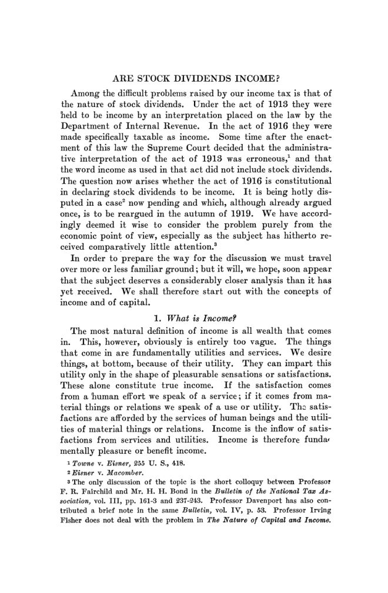

Seligman, 1919: o dividendo em ações é renda?
Leitura: 7 min
Com um caso em que a Suprema Corte ia decidir, Seligman define renda como ganho realizado e separado da fonte e conclui que o dividendo em ações, ao contrário do pago em dinheiro, não é renda do acionista.


Uma empresa tem capital de 100.000 dólares, dividido em 1.000 ações de 100 dólares, que pertencem a dez acionistas. No ano, lucra 50.000 dólares. Em 31 de dezembro, os acionistas se reúnem e têm três escolhas: distribuir o lucro em dinheiro, levá-lo à reserva ou distribuir novas ações. Edwin R. A. Seligman, da Universidade Columbia, monta esse caso para responder à pergunta do título de seu artigo na American Economic Review de setembro de 1919: o dividendo pago em ações é renda?
A pergunta não era acadêmica. A lei de 1913 fora interpretada pela Receita como se tributasse os dividendos em ações, e a de 1916 os declarava tributáveis de forma expressa. A Suprema Corte decidira que a lei de 1913 não os incluía, e o caso Eisner v. Macomber, sobre a constitucionalidade da lei de 1916, já discutido uma vez, seria rediscutido no outono de 1919. Seligman diz que o tema recebera pouca atenção e se propõe a tratá-lo só do ponto de vista econômico.
O que é renda?
A definição mais natural, toda riqueza que entra, é vaga demais. O que entra, no fundo, são utilidades e serviços, que só têm valor como satisfações. Numa sociedade monetária, renda é qualquer fluxo de satisfações que possa ser trocado por dinheiro; e é um fluxo, uma sucessão ao longo de um período, e não um momento.
Seligman acrescenta duas exigências que diz faltarem à análise corrente. A primeira é a realização: se o encanador adoece, se a casa fica sem inquilino, se o potro nasce morto, não há renda, ainda que o salário, o aluguel e a égua continuem a ter preço. A segunda é a separação: o potro, uma vez nascido, se separa da égua; o aluguel separa a utilidade do ano do conjunto de utilidades futuras que é a casa; o encanador precisa entregar o serviço para receber o salário.
E o que é capital?
Capital é o estoque de satisfações futuras, avaliado pela capitalização das rendas esperadas. Seligman inverte a relação comum: não é o capital que produz a renda, mas a renda que dá valor ao capital. Fisicamente, o fruto é produto da árvore; economicamente, a árvore só vale porque o fruto vale. Um terreno vale cerca de vinte e cinco anos de aluguel, porque o futuro distante pesa pouco no presente. Renda líquida é o que se separa do capital mantendo-o intacto.
Quando uma valorização do capital é renda?
Seligman distingue três tipos de valorização. Na primeira, o capital cresce porque se acumulou renda já recebida, como os juros reinvestidos de um depósito ou a safra de algodão somada ao estoque: isso é renda. Na segunda, o capital vale mais porque a renda esperada aumentou, como a terra irrigada. Na terceira, o preço sobe sem mudança na renda, por especulação ou interesse de controle. Nos dois últimos casos, o ganho é renda incipiente, um ganho no papel, e só se torna renda quando realizado pela venda.
O exemplo da floresta resume o critério. A madeira cortada a cada ano é renda; se as árvores não forem cortadas, a floresta vale mais, mas o acréscimo não foi separado nem pode sê-lo sem o corte. Por isso, diz Seligman, nenhum país tributa como renda a simples valorização de um terreno que não foi vendido.
Seligman resume: “Realizabilidade não é realização; separabilidade não é separação.” (“Realizability is not realization; separability is not separation.”)
O que mostra o exemplo da empresa?
Com o dividendo em dinheiro, a empresa paga 50 dólares por ação: o capital continua em 100.000 dólares, a ação vale 100, e cada acionista recebe 5.000 dólares. Com o lucro levado à reserva, o capital passa a 150.000, as ações continuam 1.000, e cada uma vale 150. Com o dividendo em ações, o capital é 150.000, as ações passam a 1.500, cada uma vale 100, e cada acionista tem quinze em vez de dez.
Para Seligman, o dividendo em dinheiro é renda, porque há separação dos ativos da empresa e realização pelo acionista. O aumento da reserva não é renda do acionista; é a destinação da renda da empresa, que já paga imposto sobre ela. O dividendo em ações equivale à reserva: há mais papéis, mas o ativo continua indiviso, e o acionista não está mais rico do que estaria se o lucro tivesse ido para a reserva.
E se o acionista vender as novas ações?
A objeção óbvia é que o acionista pode vender as cinquenta ações novas por 5.000 dólares e manter intacto o capital original, como no dividendo em dinheiro. Seligman responde que, no caso da reserva, ele poderia fazer o mesmo: vender 33 1/3 ações a 150 dólares e ficar com 66 2/3 que valem 10.000. Quando o ganho é vendido, os três casos se igualam e há renda tributável. A questão é o que acontece se ele não vender.
A segunda objeção é a distribuição em ações de outra empresa, comum na época. Se ela é renda, por que não a distribuição das próprias ações? Porque, no primeiro caso, os diretores tiram os lucros dos ativos e os entregam ao acionista, em dinheiro, em cobre, em lã ou em títulos de terceiros; no segundo, nada sai do patrimônio. Seligman acrescenta que realização não significa imunidade a perdas: o dividendo em dinheiro é renda mesmo que o banco onde foi depositado quebre depois.
Numa nota, Seligman trata do precedente da lei de 1864, que tributava ao acionista a parte dos lucros não distribuídos. Ele explica que aquela lei não tinha imposto sobre a renda das empresas, salvo para poucos setores, e tentava alcançar o lucro por outro caminho; com o imposto corporativo em vigor, tributar o lucro retido ao acionista seria tributar a mesma renda duas vezes.
A conclusão é taxativa: “Dividendo em dinheiro é renda; dividendo em ações não é renda.” (“A cash dividend is income; a stock dividend is not income.”)
Na minha leitura
Na minha leitura, o artigo vale menos pela conclusão do que pelo método. Seligman resolve uma questão de tributação construindo primeiro uma teoria da renda, com critérios explícitos, e depois aplicando-a a um exemplo numérico em que todas as alternativas produzem o mesmo patrimônio final. O exemplo isola o ponto: o que distingue os casos não é o valor, mas a forma, e o imposto de renda, por definição, incide sobre o fluxo realizado, e não sobre qualquer aumento de riqueza.
O critério da realização tem uma razão econômica que Seligman explicita: a valorização não realizada pode desaparecer antes de ser convertida. Mas o próprio texto mostra o custo do critério, porque o contribuinte escolhe quando realizar. A linha entre renda e capital, que ele traça com cuidado, é também a linha que define o que o imposto alcança e quando.
Glossário
- Dividendo em ações
- distribuição de novas ações da própria empresa aos acionistas, sem saída de recursos.
- Realização
- conversão de um ganho em algo efetivamente recebido, como dinheiro ou bem vendido.
- Separação
- destacamento do ganho em relação à fonte que o produz, deixando o capital intacto.
- Capitalização
- cálculo do valor presente de um capital a partir das rendas futuras esperadas.
- Renda incipiente
- termo de Seligman para o ganho ainda não realizado, que só vira renda quando convertido.
Fontes
- Are Stock Dividends Income? — Edwin R. A. Seligman (Columbia University) (pp. 517–536). JSTOR · Internet Archive (PDF)
- Edição completa, com os demais artigos: Nº 159 do Arquivo.
Documento em domínio público (EUA, publicado antes de 1931), via JSTOR Early Journal Content e Internet Archive. Resumo e comentário do autor deste site, sem afiliação com a American Economic Association. Encontrou um erro? Escreva: a correção é publicada no próprio texto, com data.
← Friday, 1919: o que as declarações de 1916 mostraram ↑ Nº 159 · Tarifa por peça, monopólio e a pergunta: dividendo em ações é renda?